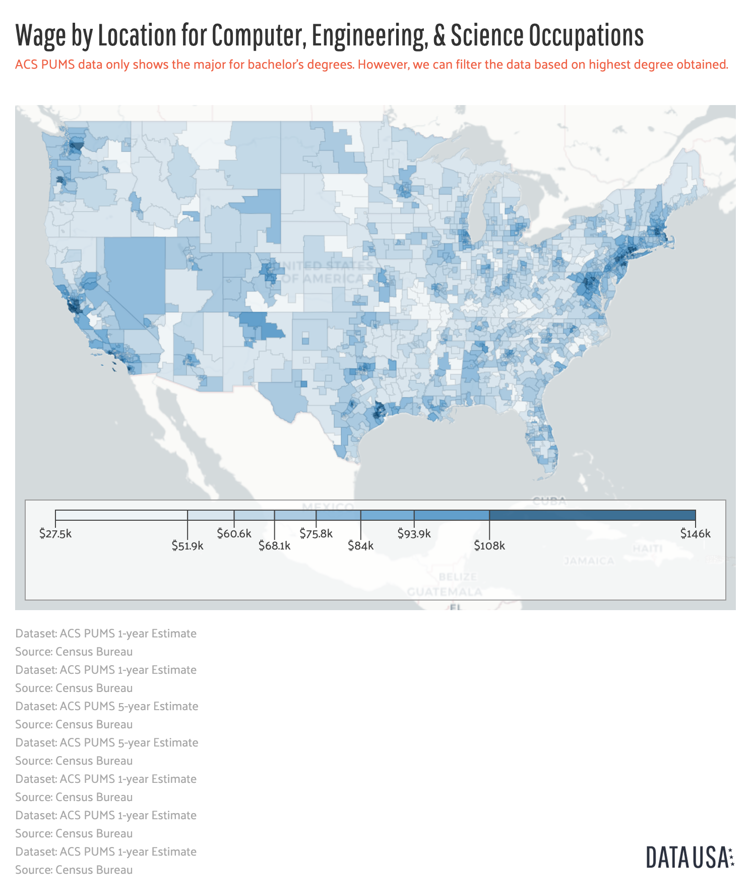

Discription
This is the information on the businesses and industries that employ Computer, engineering, & science occupations and on wages and locations for those in the field.
It shows the various occupations closest to Computer, engineering, & science occupations as measured by average annual salary in the US.
Download the Dataset

This map shows the Public Use Microdata Areas (PUMAs) in the United States shaded by average annual wage for Computer, engineering, & science occupations.
Download the Dataset 